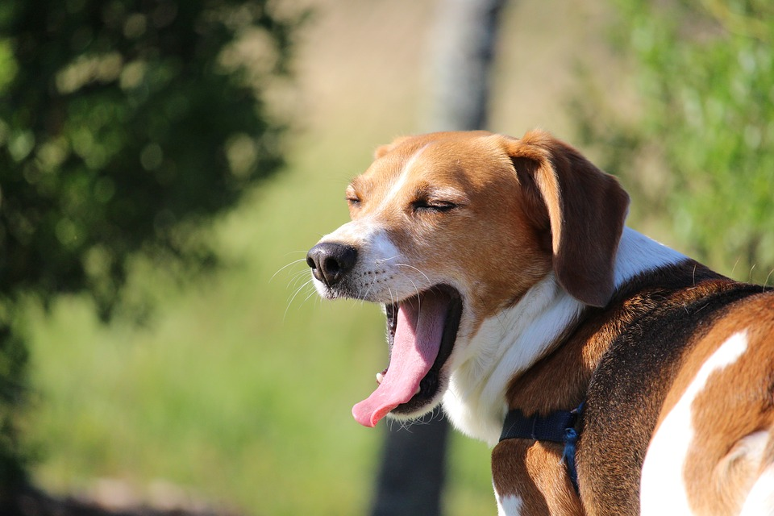

By Kulgar, Live Science Managing Editor | August 16, 2014

You speak dog better than you think you do. You may not be fluent; that would require actually being a dog. But if you went to live in a dogs-only world, you’d be pretty good at understanding what they’re saying. You can tell a nervous yip from a menacing growl, a bark that says hello from a bark that says get lost. You can read the body language that says happy, that says sad, that says tired, that says scared, that says Please, please, please play with me right now!
Think that’s not a big deal? Then answer this: What does a happy bird look like? A sad lion? You don’t know, but dog talk you get. And as with your first human language, you didn’t even have to try to learn it. You grew up in a world in which dogs are everywhere and simply came to understand them.
That, by itself, says something about the bond that humans and dogs share. We live with cats, we work with horses, we hire cows for their milk and chickens for their eggs and pay them with food—unless we kill them and eat them instead. Our lives are entangled with those of other species, but we could disentangle if we wanted.
With dogs, things are different. Our world and their world swirled together long ago like two different shades of paint. Once you’ve achieved a commingled orange, you’re never going back to red and yellow.
But why is that? It’s not enough to say that the relationship is symbiotic—that dogs hunt for us and herd for us and we keep them warm and fed in return. Sharks and remora fish struck a similarly symbiotic deal, with the remora cleaning parasites from the shark’s skin and getting to help itself to scraps from the shark’s kills as its pay. That underwater deal is entirely transactional; love plays no part. Humans and dogs, by contrast, adore each other.
The relationship began—well, nobody knows exactly when it began. The earliest remains of humans and dogs interred together date to 14,000 years ago, but there are some unconfirmed finds that are said to be more than twice as old. The larger point is the meaning of the discoveries: we lived with dogs and then chose to be buried with them. Imagine that.
It was only by the tiniest bit of genetic chance that our cross-species union was forged at all. Dogs and wolves share 99.9% of their mitochondrial DNA—the DNA that’s passed down by the mother alone—which makes the two species nearly indistinguishable. But elsewhere in the genome, there are a few genetic scraps that make a powerful difference. On chromosome six in particular, investigators have found three genes that code for hyper-sociability—and they are in the same spot as similar genes linked to similar sweetness in humans.
Our ancestors didn’t know what genes were many millennia ago, but they did know that every now and then, one or two of the midsize scavengers with the long muzzles that came nosing around their campfires would gaze at them with a certain attentiveness, a certain loving neediness, and that it was awfully hard to resist them. So they welcomed those few in from the cold and eventually came to call them dogs, while the animals’ close kin that didn’t pull the good genes—the ones we would come to call wolves or jackals or coyotes or dingoes—would be left to make their way in the state of nature in which they were born.
When humans ourselves left the state of nature, our alliance with dogs might well have been dissolved. If you didn’t need a working dog—and fewer and fewer people did—the ledger went out of balance. We kept paying dogs their food-and-shelter salary, but we got little that was tangible in return. Never mind, though; by then we were smitten.
Our language reflected how love-drunk we’d gotten: the word “puppy” is thought to have been adapted from the French poupée, or doll—an object on which we lavish irrational affection. Our folk stories were populated by dogs: the Africans spoke of Rukuba, the dog who brought us fire; the Welsh told the tale of the faithful hound Gelert, who saved a prince’s baby from a wolf. Aristocrats took to including the family dog in family portraits. Wealthy eccentrics took to including dogs in their wills.
Today, at least in areas populated by humans, dogs are the planet’s most abundant terrestrial carnivore. There are about 900 million of them worldwide, just shy of 80 million of whom live in the U.S. alone. The single species that is the domestic dog—Canis lupus familiaris—has been subdivided into hundreds of breeds, selected for size or temperament or color or cuteness.
The average American dog owner spends more than $2,000 a year on food, toys, medical care and more, and some people would be prepared to pay a much higher, much dearer price. When Hurricane Katrina struck New Orleans in 2005, so many people refused to evacuate without their dogs that Congress passed a law requiring disaster preparedness plans to make accommodations for pets.
What began as a mutual-services contract between two very different species became something much more like love. None of that makes a lick of sense, but it doesn’t have to. Love rarely touches the reasoning parts of the brain. It touches the dreamy parts, the devoted parts—it touches the parts we sometimes call the heart. For many thousands of years, it’s there that our dogs have lived.